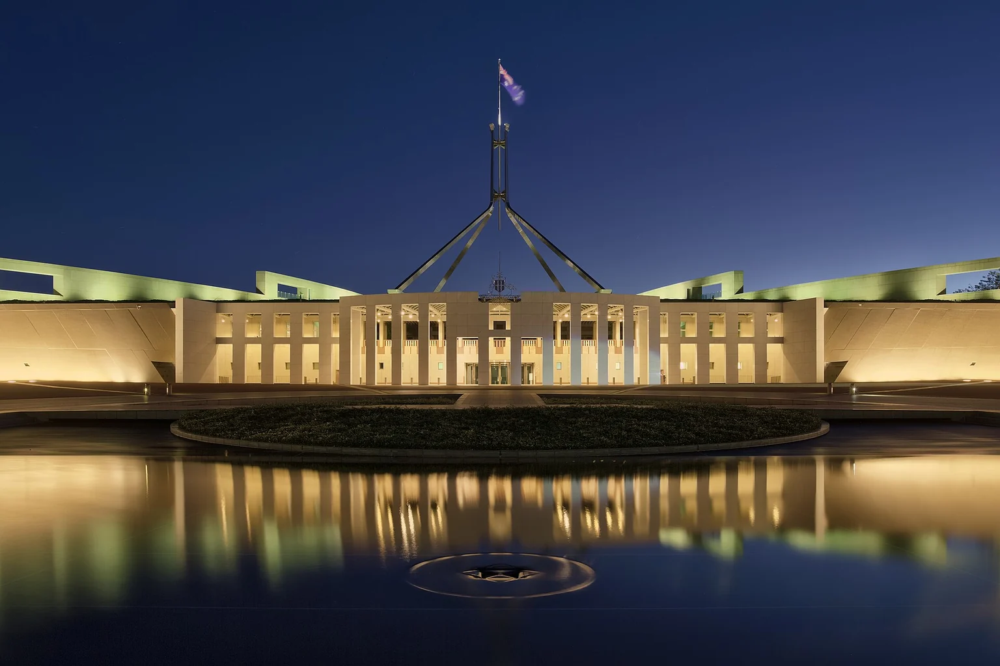

Brisbane City Council
Councillor Fiona Cunningham
Coorparoo Ward Councillor, Deputy Mayor and Civic Cabinet Chair of Finance and City Governance
Coorparoo Ward, including Stones Corner
coorparoo.ward@bcc.qld.gov.au
07 3403 2101

Exploring a civic establishment
Local representatives and relevant government portfolios for a practical, place-based proposal.
System in development · Brisbane · 8 November 2026
Parliament House, Canberra, at dusk on 7 April 2017.
Image credit ↗Local representatives
The candidate site sits in Coorparoo Ward, the Greenslopes state electorate and the Griffith federal electorate. These public offices can help connect local questions with the relevant government responsibilities.
Brisbane City Council
Coorparoo Ward Councillor, Deputy Mayor and Civic Cabinet Chair of Finance and City Governance
Coorparoo Ward, including Stones Corner
coorparoo.ward@bcc.qld.gov.au
07 3403 2101
Queensland Parliament
Member for Greenslopes
Greenslopes state electorate
Greenslopes@parliament.qld.gov.au
07 3414 2100
Australian Parliament
Member for Griffith
Griffith federal electorate
Renee.Coffey.MP@aph.gov.au
07 3397 1674
Potential portfolio alignment
This map identifies relevant responsibilities for a proposal. Its inclusion here describes potential alignment, rather than an existing endorsement, agreement or funding commitment.
| Theme and sources | Brisbane City Council | Queensland | Commonwealth |
|---|---|---|---|
| Disaster resilience | Adrian Schrinner: local disaster group. Tracy Davis: preparedness and SES coordination. | Ann Leahy: recovery and volunteers. Dan Purdie: emergency management and SES. | Kristy McBain: Emergency Management, with NEMA. |
| Children and young people | Vicki Howard: Community and the Arts. | Amanda Stoker: families and child safety. Sam O’Connor: Youth. | Jess Walsh: Youth and Early Childhood Education. |
| Women and enterprise | Vicki Howard: community. Adam Allan: economic development. | Fiona Simpson: Women and Women’s Economic Security. Steve Minnikin: Small and Family Business. | Katy Gallagher: Women. |
| Volunteering | Vicki Howard: community participation and organisations. | Ann Leahy: Volunteers. | Tanya Plibersek: Social Services. |
| Community services | Vicki Howard: Community and the Arts. Fiona Cunningham: the local ward. | Amanda Stoker: community services and recovery. Sam O’Connor: Public Works. | Tanya Plibersek: Social Services. |
| Innovation | Adam Allan: economic development. Fiona Cunningham: Council digital and innovation governance. | Andrew Powell: Science and Innovation. Steve Minnikin: digital economy and small business. | Tim Ayres: Industry, Innovation and Science. |
| Workforce and skills | Adam Allan: local business and employment. | Ros Bates: Employment and Training. | Amanda Rishworth: Employment and Workplace Relations. Andrew Giles: Skills and Training. |
Checked 7 November 2026. Amanda Stoker was appointed to the families and child-safety portfolios on 24 October 2026. Use the linked official pages to confirm details before an approach.
A concrete first discussion
A proposed route into the building, the available indoor space, the parties and their responsibilities.
Explore →A selected mix of activities, actual providers, intended participants and a result worth measuring.
Explore →Room-hours, staffing, proposed contributions, equipment and a reviewable cost case.
Explore →